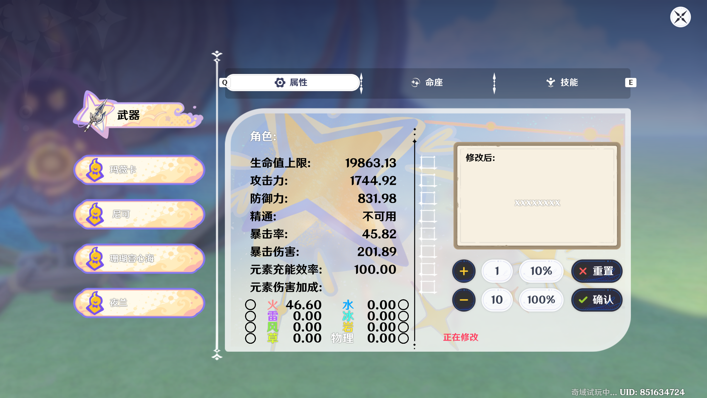
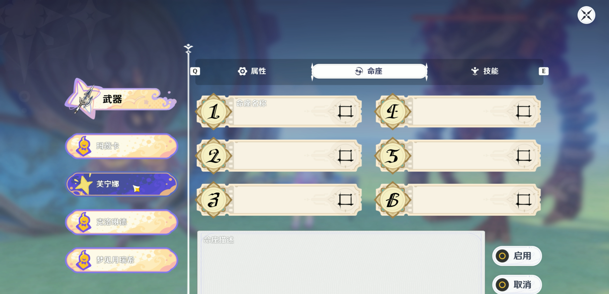
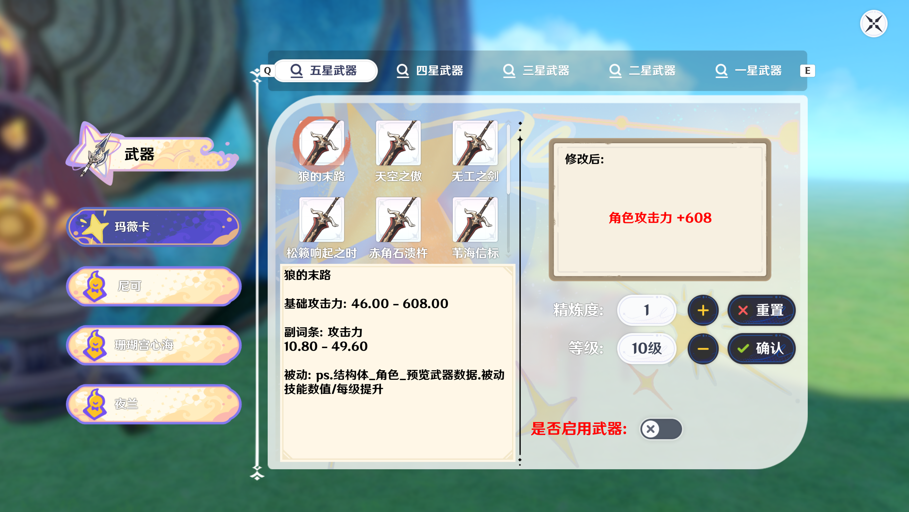
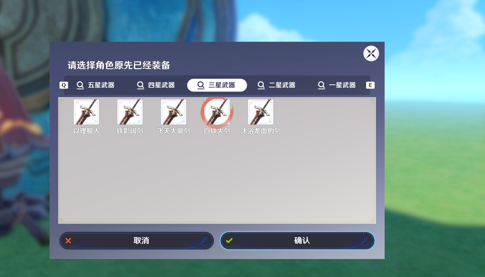
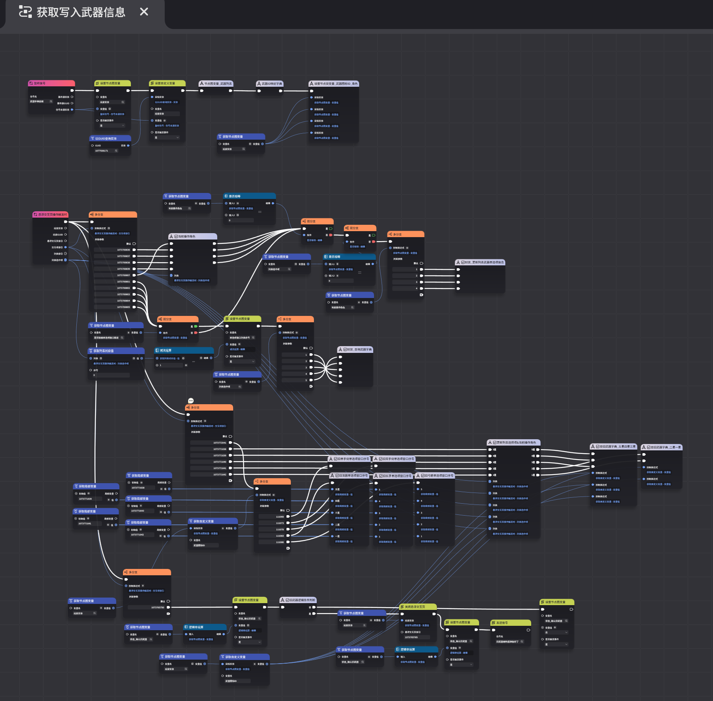
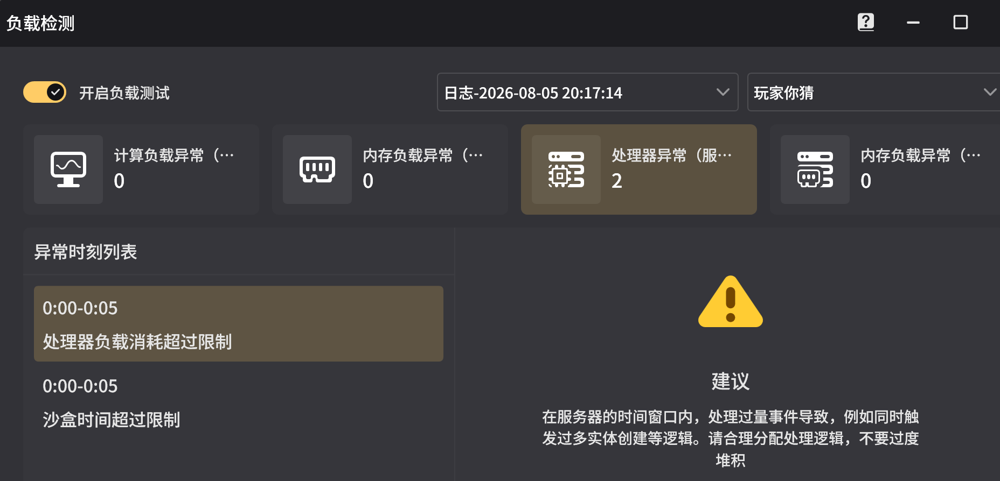
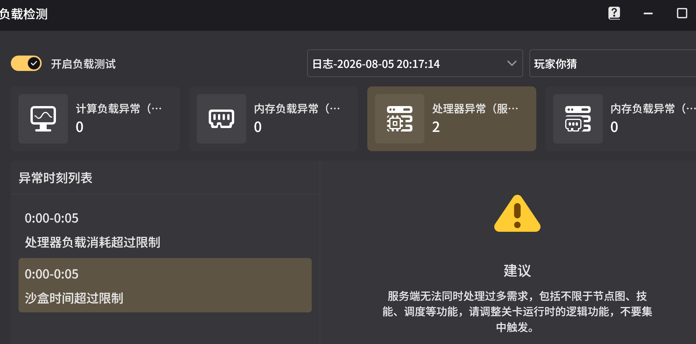

為什麼想做這個？
從原神私服消失之後，我一直有一個需求：我想要一個地方，可以在我原本的角色面板基礎上，直接測試專武的傷害差距。
看測評影片、看攻略文章，永遠是「別人的面板」。千個玩家有千種練度，只有親手裝上武器、親手砍出傷害，才知道這把武器對自己值不值得抽。畢竟抽專武不是一筆小錢。
你可能會說：「現在 UGC 裡面有木樁啊，進去測不就好了？」但目前的木樁關卡，大多需要玩家自己拿計算機，手動輸入攻擊力、暴擊率、暴擊傷害……非常繁瑣。沒有一個關卡是「選武器 → 自動換面板 → 直接砍」。
所以我想做一個東西：原神版的「訓練營」。後來想想，反正都要做武器系統了，不如連命座也一起做，這樣大家還能試試命座的提升到底有沒有用。




我覺得我可以做出來
開發前期，我先從最簡單的 UI 控件開始。千星的 UI 編輯器其實不難，稍微摸一下就會了。但因為我選的是經典模式，所以第一個坑就來了：開關按鈕只能放在「懸浮交互頁」裡面，而且必須綁定變量才能使用。我一開始不知道這件事，卡了很久。
另外，我起初不知道素材庫可以做通用模板。比如做一個文本框，綁定變量 {1}，就能實現同一套素材顯示不同文字。結果我創建了大量重複的美術文件，後期維護非常痛苦。
節點圖才是真正的噩夢
UI 弄完之後，進入節點圖開發。這是最難的部分。我猜項目組是為了照顧不會寫代碼的開發者，也為了避免一些安全問題，所以才用節點圖代替代碼。但對我來說，這基本上等於重新學一門語言。我反反覆覆地去翻開發者文檔，試錯，再翻，再試錯。

第一個問題：獲取實體
假設我把節點圖掛在角色身上，那「獲取實體」應該拿到的就是角色實體吧？結果不是。拿到的是一個不知道是什麼的實體 ID。為什麼不知道？因為日誌只會返回一串數字，而你沒辦法用這串數字去反查它是誰。你只能猜。
後來我找到了兩個方法可以拿到角色實體：一個是用「實體創建時」事件觸發節點，把輸出的實體保存下來；另一個是用「獲取在場所有角色列表」，然後取列表的第 0 位。
第二個問題：效果系統
當我要實現角色數值修改時，第一時間想到的是「添加單位狀態」——這聽起來就是 Buff 系統吧？結果不行。效果只對造物和物品起效，對玩家角色無效。武器也不能綁定效果。這條路直接封死。
第三個問題：字典的運算佔用
因為訓練營要覆蓋所有可能性，所以我需要建立角色信息庫和武器信息庫。千星只提供兩種儲存方式：字典和結構體。字典上限是 100 個鍵，而原神角色超過 100 個，所以我需要開兩本字典。每個鍵對應一個結構體，裡面存角色名稱、元素屬性、武器類型。這勉強還能處理。
但武器庫就不一樣了。246 把武器，每把 25 條數據，全部塞進字典，開局就消耗將近 50,000 點負載。結果就是：根本進不了關卡。


後來我的解法是分字典加延遲載入。先建立單手劍字典，延遲 1 秒，再建立雙手劍字典，再延遲 1 秒，再建立法器……但這個方法時好時壞。有時不加延遲也能跑，有時加了延遲還是爆。
有兩個問題我一直沒搞懂。第一，節點圖中 A 執行完再執行 B，這本身就是順序執行了，那延遲到底起到了什麼作用？第二，官方從來沒有解釋過負載到底是怎麼計算的，日誌裡的負載值到底代表什麼。
小插曲：UI 卡頓
本來 UI 那邊的設計是一種武器開一個單選項窗口，然後用節點圖判斷當前角色是什麼武器類型，再來顯隱對應的窗口。結果發現窗口太多，界面會非常卡頓。後來換成了頁籤的方式來顯示武器列表。
真正讓我放棄的原因
到這裡，其實已經解決了不少問題。但最終讓我決定放棄的，是一個我無法繞過的限制。
武器詞條能修改的屬性有限：攻擊力、防禦力、生命值、暴擊率、暴擊傷害、物理傷害加成。元素充能效率和元素精通沒辦法改。這代表有一部分武器注定無法被模擬。
但最致命的不是這個，而是攻擊力的計算。上面我提過，因為我們只能基於角色原有面板做加法，所以我們要考慮的不只是武器白值和武器副詞條，還要考慮聖遺物的影響。

攻擊力計算公式（只做加法模式）
由於千星編輯器不允許讀取聖遺物內部數據，我們只能基於角色「舊面板」做增量加法。 以下是換武器時，最終面板攻擊力的完整計算邏輯。
因此本公式使用
舊攻擊力 ÷ 舊總白值 作為「黑盒平均倍率」來替代，這會導致計算結果與遊戲實際值之間存在 約 0.5%～1.5% 的誤差（詳見下方實測對照）。
📌 變數定義
舊攻擊力 換武器前的面板總攻擊力舊總白值 角色基礎 + 舊武器基礎舊武器白值 舊武器的基礎攻擊力新武器白值 新武器的基礎攻擊力基礎權重 根據星級&白值查表（如 0.331）新技能% 新武器技能攻擊力%（小數）舊技能% 舊武器技能攻擊力%（小數，需扣掉）🧮 第一步：算出基礎值
⚡ 第二步：總增量公式（核心）
📝 實戰帶入（狼的末路範例）
舊總白值 = 907，舊武器白值 = 565，新武器白值 = 608
基礎權重 = 0.3315 → 副詞條% = 0.49725 (49.7%)
新技能% = 0.20 (狼末精1)，舊技能% = 0
角色基礎 = 907 - 565 = 342
新總白值 = 342 + 608 = 950
白值增量 = (608 - 565) × (2562.22 ÷ 907) = 43 × 2.8247 = 121.5
百分比增量 = 950 × (0.49725 + 0.20) = 950 × 0.69725 = 662.4
總增量 = 121.5 + 662.4 = 783.9
計算結果 = 2562.22 + 783.9 = 3346.1
導致白值提升部分的估算略高於實際。
* 實際測試使用 狼的末路（精煉 1 階），舊武器為 565 白值無技能武器。
比如，原武器白值是 100，副詞條是攻擊力提升 20%。那最終的計算不是單純的：新攻擊力 = 原攻擊力 - 舊武器白值 + 新武器白值 +（最終白值 × 0.2）。還要再加上聖遺物提供的白值，以及最終白值乘以聖遺物提供的攻擊力提升百分比。
問題就卡在這裡了。千星沒有提供獲取角色聖遺物數值的接口。我沒辦法直接讀到「聖遺物提供了多少白值」和「聖遺物提供了多少攻擊力%」。
我唯一能做的，是從總攻擊力反推出聖遺物的「總貢獻」——但我沒辦法拆開那兩項。而這兩項對換武器後的最終面板影響是不一樣的。所以，我沒辦法做到準確的面板修改。
我決定放棄了
很遺憾，這個項目爛尾了。因為攻擊力的計算需要結合聖遺物的百分比加成，而千星沒有提供讀取聖遺物數據的接口，所以無法精確算出換武器後的最終攻擊力面板。
但回頭看，這個失敗其實在開發前期就注定了：我沒有先確認「聖遺物數據能不能讀取」，就開始做 UI 和武器庫了。
但我還是學到了很多
雖然項目爛尾了，但這段經歷還是很值得。我學到了 GUI 式開發的思維方式，學會了字典和結構體的多層嵌套與查詢，學會了在工具限制下做性能優化，也學會了判斷一個功能到底可不可行。
下次如果再做類似的項目，我會先確認所有數據接口是否可用，先做一個最小可行性的原型，而不是一開始就想著覆蓋所有武器和所有角色。
最後
這段和千星編輯器「鬥智鬥勇」的經歷真的很過癮。我也徹底摸清了這套工具的上下限，知道了下一次該怎麼做。
期待未來官方能開放更多 API，也許到那時，我會把這個「100% 完美的私人定製傷害模擬器」真正做出來。但在那之前，先讓這個項目好好躺著吧。
致謝
感謝這段時間一起討論技術的朋友們，以及千星編輯器官網社群中提供線索的開發者：